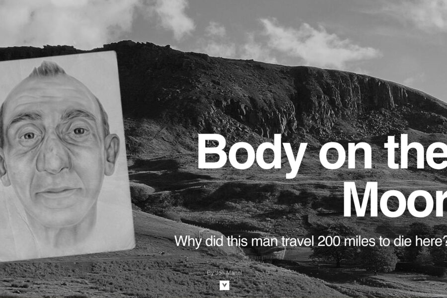
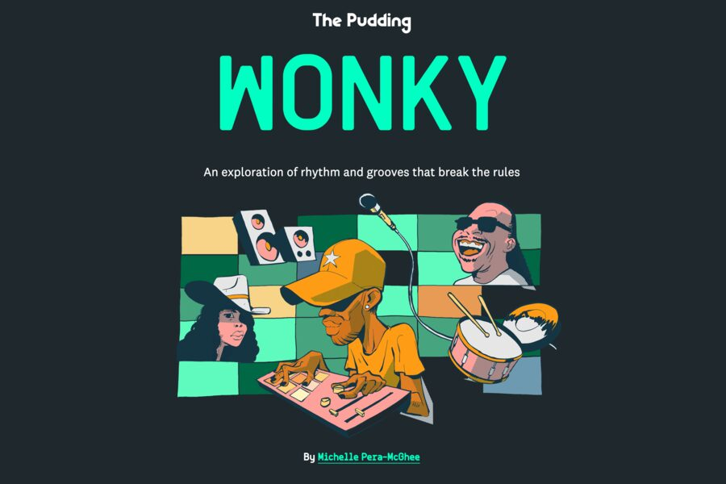
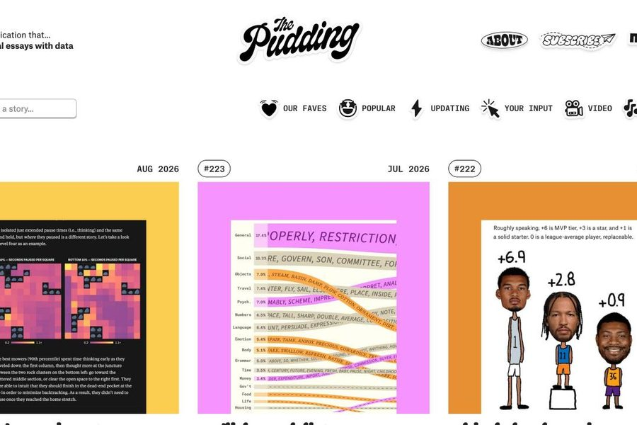
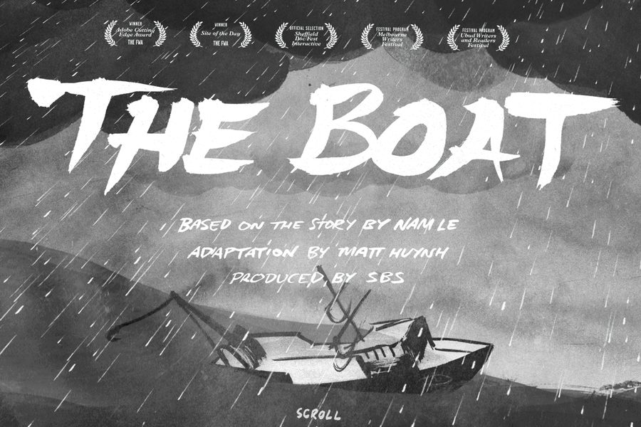
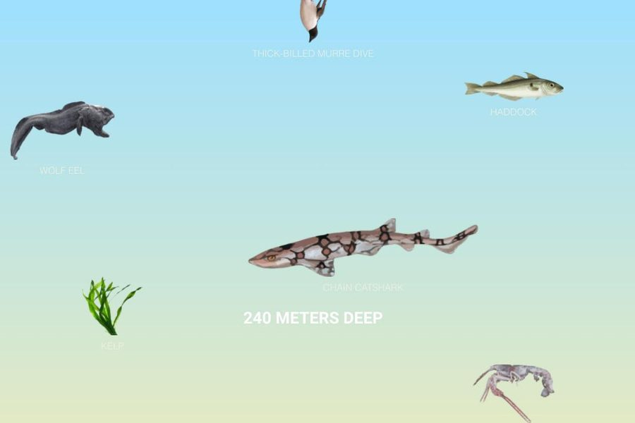
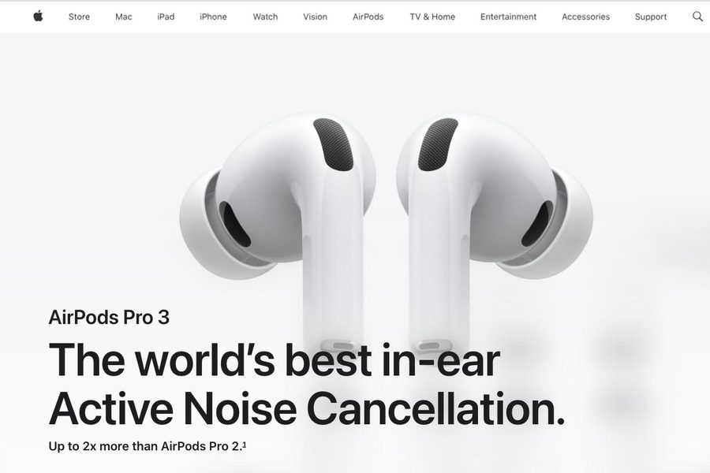
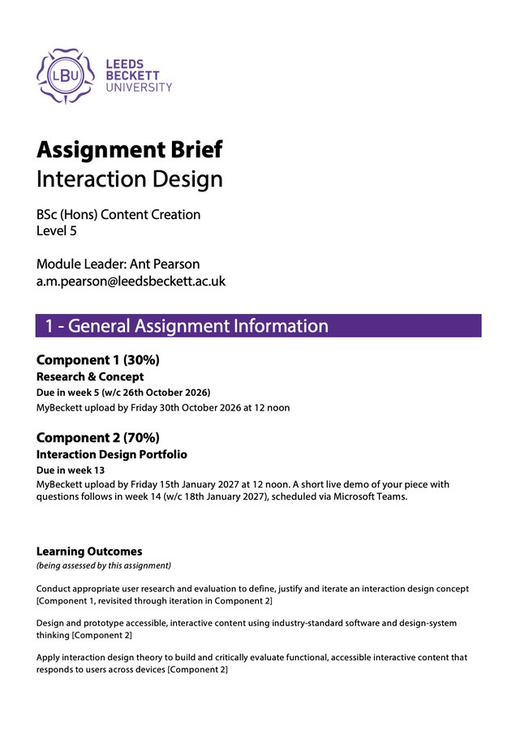

Last year, on Web Interaction, the work was technical. You learned how a web page is built. That was the point of Level 4, and you all managed to do it.
This year the centre of gravity moves from code to content. The technical skills stay and you will extend them, but they are no longer what the module is about. A site that merely works is cheap now: templates and AI tools turn one out in minutes. What none of them can do is decide what is worth saying, who it is for, and the order it has to land in. That judgement is what you are training.
So over thirteen weeks each of you will research, design and build a one-page scrolling interactive narrative: a true story or explainer, built so the scroll drives the unfolding. The story comes first. The code is how you serve it.
Session at a glance
- Welcome: what you are making this term
- Screening: three landmark pieces
- Activity 1: deconstruct a piece, in pairs
- Debrief: interaction design defined; the brief and how you are marked
Break
- Task 1: set up your kit and project folder
- Task 2: the starter file: HTML and CSS refresher
- Task 3: first commit, publish to GitHub, go live
- Your directed task for Week 2
Part one
The medium
What is a scrolling narrative?
In December 2012 the New York Times published Snow Fall, an account of an avalanche at Tunnel Creek. The reporting was long-form, but the way it was built was new: as you scrolled, the page changed around the words. Maps drew themselves, photographs took over the screen, video started and stopped. It won a Pulitzer, and for a year every newsroom in the world wanted to “do a Snow Fall”.
The form is called scrollytelling, and the idea is simple: the reader's scroll position is an input. Scroll becomes a timeline the reader controls. That is a medium with its own grammar, and a working genre: the BBC, the Guardian, Reuters and The Pudding publish in it constantly.
Snow Fall, New York Times, 2012. Notice how rarely the piece moves, and how much each move is worth when it does. Screenshot · New York Times


The screening list
We look at three of these together on the projector. Open the rest yourself and pick one for the activity. Half of what you are learning is how it feels to be the reader.
-
Snow Fall: The Avalanche at Tunnel Creek
The piece that named the genre. Restraint is the lesson.
-

Body on the MoorAn unidentified man and a police investigation, unfolding as you descend. Structure over spectacle.
-

WonkyWhy some beats feel wrong in the right way. You build the groove yourself, then push it off the grid. Agency, not just motion.
-

The PuddingVisual essays, weekly. The best single source of ideas for what this medium can do.
-

The BoatNam Le's short story about escape from Vietnam, redrawn in ink by Matt Huynh. Sound does half the work. Scroll is the only control you have, and nothing on the page answers you.
-

The Deep SeaScroll position is depth, and that is the entire mechanism. There is nothing to click. The purest version of the idea on this list, and the one you could realistically build yourself by Week 8.
-

AirPods ProScrollytelling with a budget, and both modes on one page: the scroll-driven scenes play at you, the component gallery answers you. Work out which is which.
Activity 1 · 20 minutes · in pairs
Deconstruct a piece
Pick one piece from the screening list, not the one we spent longest on. Scroll it together, slowly, twice. The second time, stop being a reader and start being a designer: watch the seams. Answer these five questions in writing. Rough notes are fine; you need them in Week 3.
- What is the story in one sentence? If it takes three, the piece has a structure problem, or you have not found the spine.
- What is the scroll actually doing? List every distinct behaviour and count them. Most good pieces use fewer than six.
- Where does the reader have agency? Any point where you act and the piece responds? Or does it only play at you? Be honest; plenty of famous pieces fail this test.
- How is it paced? Find one deliberate moment and describe what it achieves.
- What breaks if you turn the pictures off? Is there still a story, or was the text carrying nothing?
Bring back one sentence
Each pair names one thing the piece does that you would steal. Not “it looked nice”. A technique, named.
Interaction design, on this module's terms
“Interaction design” is a broad term. Here it means something specific, and the distinction below is what your work is marked against.
| Motion design | Interaction design |
|---|---|
| The reader scrolls; the piece plays. | The reader acts; the piece responds. |
| The only decision available is how fast. | There is at least one point where the reader's choice changes what they see. |
| Take away the scroll and it is a video. | Take away the scroll and it is still a page you can use. |
A page that only plays a film as you scroll is motion design. It can be beautiful and earn a good craft mark, but the brief asks for at least one designed moment of genuine interaction.
Test it on the screening list. The Boat and The Deep Sea give you one control, the scroll, and nothing on either page responds to anything else you do. Both are superb, and both are motion design by this definition. Wonky lets you build the groove and shove it off the grid; the Apple page lets you pick a component and shows you that one. Those are the moments the brief is asking for, and notice how small they are. You are not being asked to build a game.
The discipline is four things:
- Pacing: how fast it moves, and where you make the reader wait.
- Feedback: how the piece shows it has heard the reader.
- Reveal order: what the reader is allowed to know, and when.
- Agency: where the reader is genuinely in charge.
Accessibility sits underneath all four, and here it is craft rather than compliance. Motion on screen makes some people genuinely unwell, so we design a version that does not move. Not a broken version, a designed one. You are marked on how well you solve it.
The brief, and how you are marked
The full brief is in the Assessment area on MyBeckett. Read it properly this week. In outline:

| Component | What it is | Due | Weight |
|---|---|---|---|
| C1 · Research & Concept | Your verified story and sources; your audience and intent; your concept and its experience arc; a motion storyboard showing how key moments behave. | Fri 30 Oct 2026, 12 noon | 30% |
| C2 · Interaction Design Portfolio | Figma storyboard and prototype; the working build, published and responsive, with reduced-motion and no-JavaScript baselines; evaluation and rationale. Then, in Week 14, a short live demo of your piece followed by questions about how and why you made it. | Fri 15 Jan 2027, 12 noon | 70% |
Important things to remember
- Your process is evidence. Your commits and your Figma version history are a timestamped record of you doing the work. It supports your marks and it is how authorship is established, which is why we start committing today rather than in Week 7.
-
AI is for ideas, not for making the work. You are
welcome to use AI tools to generate and explore ideas. You are not
allowed to use them to write your code or the text of your story:
those are what the marks are for. Asking one to explain an error or
a technique is fine, like asking a classmate. AI-generated assets
are for the odd occasion only, and the more a piece relies on them
the lower it scores. If you use AI at all, write it down on the day
in the AI-use log,
ai-use-log.docx, which is in your starter folder, then commit: it takes a minute, and it cannot be reconstructed the night before hand-in. The log is uploaded with each component, even if it is empty, and you will be asked to explain your work in Week 14. Anything you cannot explain earns no marks. The full wording is in section 9 of the assignment brief.
Two routes to a good mark
- The editorial route: a verified story, precise pacing, a consistent look, interactions built from the recipes taught in class. Very little custom code.
- The technical route: custom GSAP, layered and pinned scenes, inventions past the taught material.
Neither is worth more. What earns marks is ambition matched by execution.
Break
Part two · Task 1
Your kit
One environment, from today until January. Last year sessions drifted between text editors and half of everyone's problems were tooling problems. Five things.
These pages are written at the studio Macs. If you work on Windows at home, everything here works the same way. Keyboard shortcuts are given for the Mac first, then for Windows.
1. Visual Studio Code
-
Already in Applications on the studio Macs. On your own machine, download it from code.visualstudio.com. On a Mac, drag it into Applications and do not run it from Downloads. On Windows, run the installer and accept the defaults.
-
Open VS Code. Open the Extensions panel: either select the Extensions icon in the bar down the left-hand side, or press ⇧⌘X (Windows: Ctrl+Shift+X). Then install three:
- Live Server: serves your page at a local address instead of opening it as a file. Essential the moment JavaScript is involved.
- Prettier: tidies your indentation on save.
- Error Lens: puts mistakes next to the line that caused them.
-
Turn on format-on-save: press ⌘, (Windows: Ctrl+,) to open Settings, search
format on save, tick the box.
2. Git
Git is a program that runs on your computer. It is the version-control system underneath everything we do this term: it records every change you make to your project.
GitHub is a website, and a different thing. It keeps a copy of your project online and publishes it as a live page.
You need both: a GitHub account first, then Git working on the machine in front of you.
-
Create your GitHub account. Sign up free at github.com/signup using your student email address. Pick a username you would put on a CV: it becomes part of your public web address for three years. GitHub emails you a code to confirm the address, so have your university mail open.
-
Open a terminal. In VS Code choose Terminal → New Terminal from the menu bar. It is the same on a Mac and on Windows. A panel opens at the bottom of the window with a flashing cursor: you type a command, press Return (Enter on a PC keyboard), and it answers.
-
Check Git is installed. Type this and press Return:
Terminal
git --versionA version number means you are done, which is what you will get on a studio Mac. On your own machine you may get an error instead, because Git is not there yet:
-
Your own Mac. A box offers to install the
command line developer tools. Click Install.
If no box appears, run
xcode-select --install. It is a large download from Apple, so allow ten minutes or more on home wifi. - Your own Windows PC. Download the installer from git-scm.com/install/windows and run it, accepting every default. Then close and reopen VS Code, or it will not find Git.
Either way, run
git --versionagain afterwards and check you get a number. -
Your own Mac. A box offers to install the
command line developer tools. Click Install.
If no box appears, run
-
Tell Git who you are. Run these two lines, one at a time, with your own name and the same email address you just gave GitHub. If the two do not match, GitHub cannot tell that your commits are yours.
Terminal
git config --global user.name "Your Name" git config --global user.email "your.name@student.leedsbeckett.ac.uk"Nothing appears when they work. No reply is the right reply.
On the studio Macs, every time
Those two lines are remembered by the machine, not by you. Sit at a different studio Mac and Git has no idea who you are, and it will refuse your first commit with an unhelpful message. Run both lines whenever you start on a machine you have not used before. On your own computer, Mac or Windows, you only ever do it once.
3. Figma
From Week 4 you storyboard your scroll scenes in Figma, and your version history is process evidence. Sign in at figma.com/education with your student email for the free education plan, and make a project called Interaction Design now.
4. Chrome DevTools
Your fourth tool is the browser itself. In Chrome:
- ⌥⌘I (Windows: Ctrl+Shift+I): open DevTools.
- ⌥⌘J (Windows: Ctrl+Shift+J): open the Console, where JavaScript errors appear. Get in the habit of leaving it open.
- The device icon toggles device toolbar: how you check your piece at phone size without a phone.
5. Your project folder
Where you keep this matters more than you would think. On your own
machine, make a Developer folder in your home folder and
keep the module inside it. Your home folder is the one with your
name on it, holding Documents, Desktop and Downloads. Easiest done
in Finder or File Explorer, no terminal needed:
-
Mac, in Finder. Choose
Go → Home from the Finder menu bar (or press
⇧⌘H). Right-click an empty space and choose
New Folder, name it
Developer, open it, then make another new folder inside calledinteraction-design. -
Windows, in File Explorer. Open File Explorer and
click your user name under This PC in the
sidebar: that is your home folder. Right-click an empty space and
choose New → Folder, name it
Developer, open it, then make another new folder inside calledinteraction-design.
If you would rather use the terminal, or want to check you are in
the right place later, this is the path. The ~ is
shorthand for your home folder:
Mac
~/Developer/interaction-design/Windows
C:\Users\your-name\Developer\interaction-design\On your own machine, not the Desktop or Documents
Those two folders are usually synced to the cloud: by iCloud Drive
on a personal Mac, by OneDrive on a Windows PC. Both are often on
by default. Cloud sync fights with Git, quietly corrupts files, and
produces errors nobody can diagnose at 11pm. A
Developer folder in your home folder is outside both.
On a studio Mac, use the Desktop
The studio Macs are different: the Desktop there is plain local disk and nothing syncs it, so it is safe. It is also not yours. Do not count on the folder being there next week. GitHub is how your work travels: you sync before you leave, and on the next machine you clone it back down. Never put the project folder in your university OneDrive. It fights with Git the same way iCloud does.
Naming, from today
Lower case. Hyphens, never spaces. No
Final_v2 FINAL.html. Web servers care and your own
machine does not, which is how people discover on hand-in day that
their site works locally and nowhere else.
The end of Task 1: starter folder open, Live Server running, Console visible. Screenshot · own
Part three · Task 2
The starter file
Download interaction-design-starter.zip (it is on MyBeckett too) and unzip it into your
interaction-design folder. On Windows, right-click the
zip and choose Extract All…: double-clicking
only looks inside it, and files opened from there will not save.
Then File → Open Folder… in VS Code and
choose it. Right-click index.html and pick
Open with Live Server. Leave it running: it reloads
every time you save.
Folder structure
interaction-design-starter/
├── index.html the page
├── css/
│ └── style.css the stylesheet
├── js/
│ └── main.js empty on purpose, for now
├── images/ placeholder pictures
├── ai-use-log.docx your AI-use log
└── README.mdThis is the file you build on all term. It is a starting point, not a design: a cover, one chapter and a credits list, with a placeholder font, three placeholder colours and some very basic layout. You are expected to change all of it. Your own fonts, colours, layout and everything that moves are what you are marked on.
Read the HTML
Open index.html. It is fifty lines and you wrote pages
like it last year. One thing to notice: the page is built from
<header>, <main>,
<section> and <footer>, not from
<div>s. Those tags say what each part is.
Keep using them as the page grows: a chapter is a
<section>, a picture with a caption is a
<figure>.

Read the CSS
Open css/style.css and read it top to bottom. Every
rule has a comment saying what it does. Most of it you met last
year. Two things are probably new.
css/style.css
:root {
--ink: #1a1a1a; /* text */
--paper: #ffffff; /* page background */
--accent: #c0392b; /* links, and anything you want to stand out */
}
Those are CSS variables. You name a value once,
then use it anywhere with var(--ink). Change the value
on that one line and everything that uses it changes. Look at
header: it is the same two colours swapped over.
The other is min-height: 100svh on the cover.
svh is a unit: 100 of them is one full screen, so the
cover always fills the window whatever its size. It is
vh from last year, fixed so that a phone's address bar
does not push the bottom of the cover off screen.
Task 2 · 20 minutes · on your own
Make it yours
Start turning the placeholder into something of your own. It does not need to look good today; it needs to stop looking like everyone else's.
-
Change the
<title>, the headline and the byline to your own. -
Change the three colours in
:rootto a palette of your own. Watch what moves. Add a fourth variable and use it somewhere. -
Go to fonts.google.com,
choose a font, and replace the
<link>tags inindex.htmlwith the ones it gives you. Then changefont-familyinstyle.cssto match. If the page falls back to a plain font, the two names do not agree. -
Make the
h1look like the title of your story: size, weight, spacing. Then restyle the cover: it does not have to be dark, or centred. -
Copy the
<section>, paste it below itself and change its heading and text. Confirm it appears. -
Open the Console (⌥⌘J, or Ctrl+Shift+J on Windows). You should see the
line
main.jsprints. If not, the script is not connected. Find out why now, not in Week 5.
Then narrow the window
Drag your browser window as narrow as it goes. Everything should stay readable, with no sideways scrolling. If it scrolls sideways, the last thing you added did it.
Part four · Task 3
Publish it
The part that makes today count. In the next twenty minutes your page goes onto the public web at an address you own, and every save from now until January leaves a dated record.
The click-by-click version
Every step below, plus what to do when you sit at a different machine next week, is in Working with GitHub, with a screenshot of each screen from the studio machines. VS Code and GitHub look the same on Windows, so it works at home too. Keep it open in a second tab. There is a PDF copy too.
Your first commit
First, trust the folder
If VS Code shows a Restricted Mode banner across the top of the window, click Manage, then Trust. Git is switched off until you do, and nothing below will work.
-
Open Source Control: the branching icon in the left bar, or ⌃⇧G (Windows: Ctrl+Shift+G).
-
Click Initialize Repository. Your files appear in a list of changes.
-
Type a message in the box at the top. Present tense, and say what you did:
Set up starter project, notasdf. In January you read these back as evidence of your own process. -
Click Commit. If it asks whether to stage all changes, say yes.
What a commit actually is
A snapshot of the whole folder with your name, the time and your note attached, which you can return to. Not a backup and not a cloud drive: a record of the decisions you made and when. Commit at the end of every working session, finished or not.
Publish to GitHub
-
Still in Source Control, click Publish Branch (it may read Publish to GitHub).
-
VS Code asks you to sign in to GitHub. Allow it: a browser window opens, you authorise once, and it remembers.
-
Name the repository
interaction-designand choose public. Look before you click: the list puts the private option first and highlights it. If you pick the wrong one, it can be changed later on github.com under Settings, at the very bottom of the page.
It has to be public, and that is fine
GitHub Pages only publishes from public repositories on a free account. Public means anyone can read your code. That is how the industry works and it is an asset when you apply for jobs. It does not create an academic-honesty problem for you, because your commit history is the proof the work is yours. It does mean you should not copy anyone else's, and nothing private belongs in the folder.
Turn on GitHub Pages
-
On github.com, open your new
interaction-designrepository. -
Settings, then Pages in the left sidebar.
-
Under Build and deployment → Source, choose Deploy from a branch.
-
Branch main, folder / (root). Save.
-
Wait a minute or two, then reload. Your address appears at the top:
Your live address
https://<your-username>.github.io/interaction-design/
Settings → Pages, branch main,
published address at the top. The screen to check when a URL 404s.
Screenshot · own
Open it on your phone before you leave
A real, live web page on the public internet, made by you, in your first session. Send it to someone. Then put it somewhere you will not lose it: you are submitting it in January.


Directed task · before Week 2
Commit tonight's work
Week 2 picks up where this leaves off, on the page you publish tonight.
- Make one more change to the starter: rewrite the cover, change the type, add a chapter.
- Commit it, with a message that says what you changed.
- Sync (the circular arrows in the status bar) so it reaches GitHub.
- Check your live URL updates. It takes a minute or so.
- Read the assignment brief on MyBeckett, all of it, once.
- Spend twenty minutes on The Pudding. Find one piece you wish you had made and note down why.
Coming in Week 2
Last year's Flexbox put back to work on your own page, a scene that holds still built from nothing, and the first round of story ideas. No new code library yet: the story comes first.
If you get stuck
Live Server does nothing, or opens a blank page
You have opened a single file rather than the
folder. Close everything, then
File → Open Folder… and choose
interaction-design-starter itself. The sidebar should
show index.html, css, js and
images at the top level.
The page loads but has no styling
The path in your <link> tag does not match where
the file is. It should read href="css/style.css": no
leading slash, lower case, and the file genuinely inside a
css folder. Check the Console
(⌥⌘J, or Ctrl+Shift+J on Windows) for a 404.
“Publish Branch” is greyed out or missing
You need one commit before there is anything to publish. Stage, write a message, click Commit, and the button appears.
Git asks for a username and password in the terminal
Do not type your GitHub password; GitHub stopped accepting passwords over Git years ago. Cancel out and sign in through VS Code's own prompt, which handles it for you.
My GitHub Pages URL shows a 404
Three usual causes. The first deploy is slow, so give it a few
minutes. Check
Settings → Pages really says
main and / (root). And the file
must be index.html, lower case, at the top level of the
repository.
My commits are not showing up on GitHub
Committing saves locally; syncing sends it. Click the circular arrows in the bottom-left status bar.
Something else
Ask in the studio: most of this is thirty seconds at the machine and twenty minutes by email. Out of hours, email a.m.pearson@leedsbeckett.ac.uk; I normally reply within two working days. Send the error text and a screenshot, not “it doesn't work”.
Resources
Read and watch these pieces
-
The Pudding Cup
The year's best visual and data-driven stories, chosen by people who make them.
-
Scrollytelling examples
Curated, with commentary on why each one works. Useful when you are stuck for a structure.
-
Information is Beautiful Awards
Broader than scrollytelling. A good corrective if your instincts all run one way.
Archives you can build a story from
You choose your own topic in Week 3. To browse early: these are free, credible and full of change-over-time material.
-
NASA: World of Change
The same place over decades: the Aral Sea, Amazon deforestation, glaciers, Shanghai.
-
USGS: Earthshots
Over 100 locations where satellite imagery documents land changing.
-
ESA: Earth from Space
The European equivalent, with text you can source from.